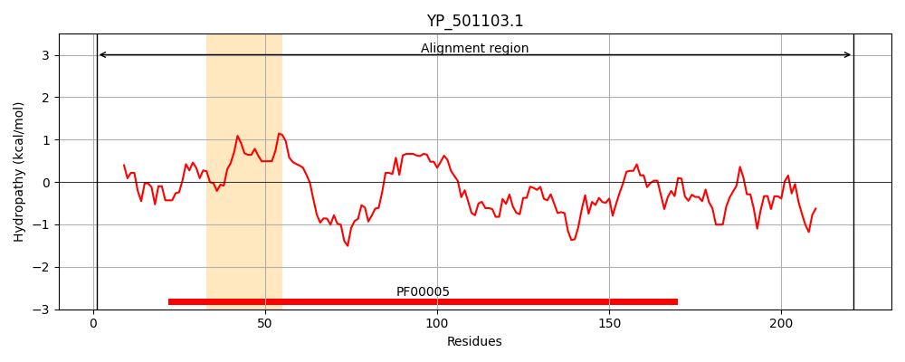
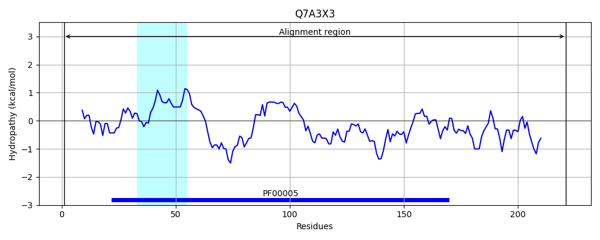
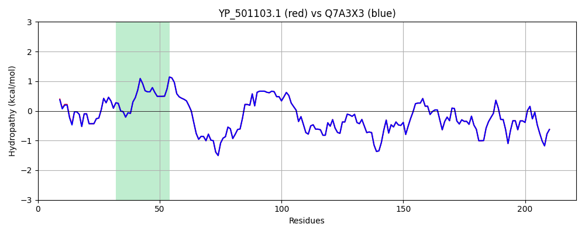

Hit Accession: Q7A3X3
Hit TCID: 3.A.1.122.4
Hit Description: gnl|BL_ORD_ID|15370 gnl|TC-DB|Q7A3X3|3.A.1.122.4 Putative hemin import ATP-binding protein hrtA OS=Staphylococcus aureus (strain N315) GN=hrtA PE=3 SV=1
Mach Len: 221
e:0.000000
Query TMS Count : 1
Hit TMS Count: 1
TMS-Overlap Score: 1.150000
Predicted Substrates:CHEBI:5651;ferroheme b
BLAST Alignment:
Score: 1096 , Bit scores: 426 bits, E-value: 1.8e-154, Alignment length: 221, Percentage identity: 100
Query: 1 MALVVEDIVKNFGEGLSETKVLKGINFEVEQGEFVILNGASGSGKTTLLTILGGLLSQTSGTVLYNDAPLFDKQHRPSDLRLEDIGFIFQSSHLVPYLKVIEQLTLVGQEAGMTKQQSSTRAIQLLKNIGLEDRLNVYPHQLSGGEKQRVAIMRAFMNNPKIILADEPTASLDADRATKVVEMIRQQIKEQQMIGIMITHDRRLFEYADRVIELEDGKITD 221
MALVV+DIVKNFGEGLSETKVLKGINFEVEQGEFVILNGASGSGKTTLLTILGGLLSQTSGTVLYNDAPLFDKQHRPSDLRLEDIGFIFQSSHLVPYLKVIEQLTLVGQEAGMTKQQSSTRAIQLLKNIGLEDRLNVYPHQLSGGEKQRVAIMRAFMNNPKIILADEPTASLDADRATKVVEMIRQQIKEQQMIGIMITHDRRLFEYADRVIELEDGKITD
Sbjct: 1 MALVVKDIVKNFGEGLSETKVLKGINFEVEQGEFVILNGASGSGKTTLLTILGGLLSQTSGTVLYNDAPLFDKQHRPSDLRLEDIGFIFQSSHLVPYLKVIEQLTLVGQEAGMTKQQSSTRAIQLLKNIGLEDRLNVYPHQLSGGEKQRVAIMRAFMNNPKIILADEPTASLDADRATKVVEMIRQQIKEQQMIGIMITHDRRLFEYADRVIELEDGKITD 221 | Protein Hydropathy Plots: |
|---|
|  |  |
Pairwise Alignment-Hydropathy Plot:
|
|---|
|  |